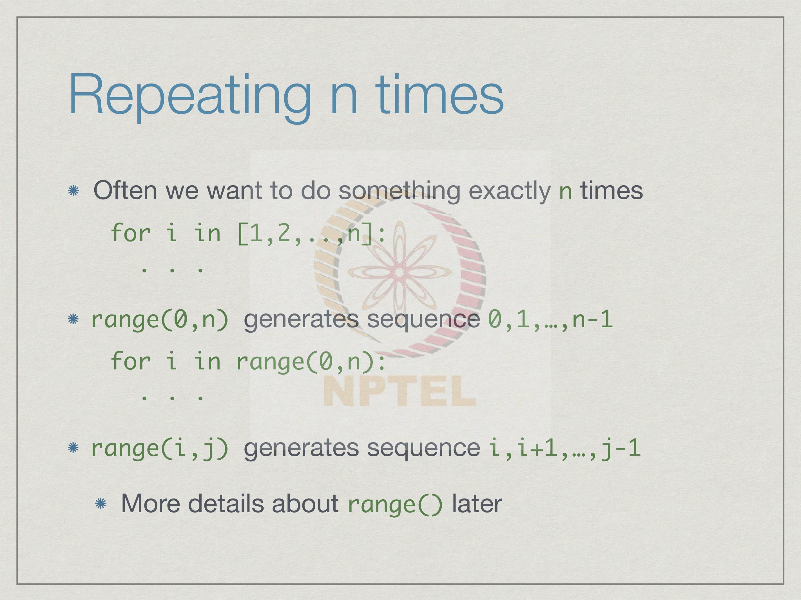

Week 2
2.1 Assignment statement, Basic types – int, float, bool
Last week, we were introduced to notation of algorithms using the gcd example. We also saw informally some python code, which we could understand but we have not actually been introduced to formal python syntax. Let us start with some real python step.
A typical python program would be written like this, we have a bunch of function definitions followed by a bunch of statements to be executed. So remember that we said python is typically interpreted, so an interpreter is a program, which will read python code and execute it from top to bottom. So, the interpreter always starts at the beginning of you of python code and reads from top to bottom. Now, function definition is a kind of statement, but it does not actually result in anything happening, the python interpreter merely digests the function kind of remembers the function definition. So that later on if an actual statement refers to this function it knows what to do. In this kind of organization the execution would actually start with the statement which is called statement 1. So, first you will digest k functions and then start executing 1, 2, 3, 4 up to statement n.
Now there is no reason to do this. So, python actually allows you to freely mix function definitions and statements, and in fact, function definitions are also statements of a kind its just they do not result in something immediately happening, but rather in the function been remembered. But one of things that python would insist is that if a function is used in a statement that has to be executed that function should have been defined already; either it must be a built in function or its definition must be provided. So, it may use this kind of jumbled up order, we have to be careful that functions are defined before they are used. Also jumbling up the order of statements and function definitions in this way, makes it much harder to read the program and understand what it is doing. Though it is not required by python as such as, it strongly recommended that all function definition should be put at the top of the program and all the statements that form the main part of the code should follow later.
What is a statement ? The most basic statement in python is to assign a value to a name. So, we see examples and we have seen examples and here are some examples. So, in the first statement i is a name and it is assigned a value 5; in the second statement, j is a different name and it is assigned an expression 2 times i. So, in this expression, the value of i will be substituted for the expression i here. So, if i have not already been assigned a value before, python would not know what to substitute for i and it would be flagged as an error. When you use a name of the right hand side as part of an expression, you must make sure that it already has a valid value. And as we saw, you can also have statements which merely update a value. So, when we say j is equal to j plus 5 it is not a mathematical statement, where the value of j is equal to the value of j plus 5. But rather that the old value of j which is on the right hand side is updated by adding 5 to it and then it gets replaced as a new value j. This is an assignment statement, this equality assigns the value computed form the right hand side given the current values of all the names if the name given on the left hand side, with the same name can appear on both sides. The left hand side is a name and the right hand side in general is an expression. And in the expression, you can do things which are legal, given the types of values in the expression. So, values have types; if you have numbers, you can perform arithmetic operations; if you have some others things, you can perform other operations. So, what operations are allowed depend on the values and this is given technically the name type. So, when we said type of values it is really specifying what kinds of operations are legally available on that class of values.
So the most basic type of value that one can think of are numbers. Now in python and in most programming languages numbers come in two distinct flavours as you can call them integers and numbers which have fractional parts. So, in python these two types are called int and float. So, int refers to numbers, which have no decimal part, which have no fractional part. So, these are whole numbers they could be negative. So, these are some examples of values of type int. On the other hand, if we have fractional parts then these are values of type float.
Normally in mathematics we can think of integers as being a special class of say real
numbers. So, real numbers are arbitrary numbers with fractional parts integers are those
real numbers which have no fractional. But in a programming language there is a real
distinction between these two and that is, because of the way that these numbers are
stored. So, when python has to remember values it has to represent this value in some
internal form and this has to take a finite amount of space.
If you are writing down, say a manual addition sum you will write it down on a sheet of
paper and depending on a sheet of paper and the size of your handwriting there is a
physical limit to how large a number you can add on that given sheet of paper. In the
same way any programming language, will fix in advance some size of how many digits
it uses to store numbers and in particular as you know almost all programming languages
will internally use a binary representation. So, we can assume that every number whether
an integer or real number is stored as a finite sequence of zeroes and ones which
represents its value.
Now, if this happens to be an integer you can just treat that binary sequence as a binary
number as you would have learnt in school. So, the digits represent powers of 2, usually
there will be one extra binary digit 0 or 1 indicate whether it is plus or minus and they
may be other more efficient ways of representing negative numbers, but in particular you
can assume that integers are basically binary numbers.
They are just written as integers in binary notation. Now when we come to non integers
then we have two issues one is we have to remember the value which is the number of
digits which make up the fractional part and then we have to remember the scale. So,
think of a number in scientific notation right, so, your normally have two parts when we
use things in physics and chemistry for instance, we have the value itself that is what are
the components of the value and we have how we must shift it with respect to the
decimal point. So, this says move the decimal point 24 digits to the right.
So, this first part is called the mantissa right and this is called the exponent. So, when we
have the number in memory if it is an int, then the entire string is just considered to be
one value where as if we have block of digits which represents a float. Then we have
some part of it, which is the mantissa, and the other part, which is the exponent.
The same sequence of binary digits if we think of it as an int has a different value and if
we think of it as a float has a different value. So, why float you might ask. Float is an old
term for computer science for floating point; it refers to the fact that this decimal point is
not fixed. So, an integer can be thought of as a fixed decimal point at the end of the
integer a floating point number is really a number where the decimal point can vary and
how much it varies depends on the exponent. So there are basically fundamental
differences in the way you represent integers and floating point numbers inside a
computer and therefore, one has to be careful to distinguish between the two. So, what
can we do with numbers?
Well we have the normal arithmetic operations plus, minus, multiplication, which has a
symbol star modern x and division, which has a symbol slash. Now notice that for the
first three operations it is very clear if I have 2 ints and I multiply them or add them or
subtract them I get an int. But I have 2 floats I will get a float, division, on the other hand
will always produce a float if i say 7 and divided by 2 , for instance where both are ints I
will get an answer 3 point 5.
Now in general python will allow you to mix ints and floats, so i can write 8 plus 2 point
6 even though the left is an int and right is a float and it will correctly give me 10 point 6.
In that sense python respects the fact that floats are a generalized form of int. So, we can
always think of an int as being a float with a point 0 at the end. So, we can sort of
upgrade an int to a float if you want to think of it that way and incorporate with an
expression, but division always produces floats. So, 7 divided by 3 point 5 as an example
of a mixed expression, where I have an int and float and this division results in 2 point 0
and 7 by two results in 3.5.
Now there are some operations where we want to preserve the integer nature of the operands. We have seen one repeatedly in gcd which is the modulus operator, the remainder operator. But the req corresponding operator that go through the reminder is the quotient operator. So, if I use a double slash it gives me the quotient. So, 9 double slash 5 says how many times 5 going to 9 exactly without a fraction and that is 1 because in a 5 times 1 is 5 and 5 times 2 is 10 which is bigger than 9 and the remainder is 4. So, 9 percent 5 will be 4. Another operation which is quite natural and common is to raise one number to another number and this is denoted by double star. 3 double star 4 is what we would write normally as 3 to the power 4 is 3 times, 3 times, 3 four times right and this is 81.
Now there are more advanced functions like log, square root, sin and all which are also built into python, but these are not loaded by default. If you start the python interpreter you have to include these explicitly. Remember we said that we can include functions from a file we write using this import statement. There is a built in set of functions for mathematical things which is called math. So, we must add from math import star; this can be done even within the python program it does not have to be done only at the interpreter. So, when we write a python program where we would like to use log, square root and sin and such like, then we should add the line from math import star before we use these functions.
We have seen three concepts - names which are what we use to remember values, values which are the actual quantities which we assign to names and we said that there is a notion of a type. So, type determines what operations are legal given the values that we have. So, the main difference between python and other languages is that names themselves do not have any inherent type. I do not say in advance that the name i as an integer or the name x is a float. Names have only the type that they are currently assigned to by a value that they have. The type of a name is not fixed. In a language like C or C++ or Java we announce our names in advance. We declare them and say in advance what type they have. So, if we see an i in an expression we know in advance that this i was declared to be of type int this x was declared to be of type float and so on. Now in python this is not the case.
So, let us illustrate this with an example. So, the name main feature of python is that a
name can be assigned values of different types as the program evolves. So, if we start
with an assignment i equals to 5 since 5 is an int i has a type int. Now if we take an
expression, which produces an int such as 7 times 1, i remain an int. Now if we divide
the value of i by 3. So, at this point if we had followed the sequence i is 7. So, 7 by 3
would be 2.33 and this would be a float.
Therefore, because the operation results in a float at this point j is assigned the value of
type float. Now if we continue at some later stage we take i and assign it to the value 2
times j, since j was a float i now becomes float. In the interpreter there is a useful
function called type. So, if you type the word type and put an expression and either a
name or an expression in the bracket, it will tell you actually type of the expression.
Now although python allows this feature of changing the type of value assigned to a
name as the program evolves, this is not something that is recommended. Because if you
see an i and sometimes its a float and sometimes its an int it is only confusing for you as
a programmer and for the person trying to understand your code. The same way that we
said before that we would like to organize our python code so that we define all functions
before we execute statements, it is a good idea to fix in advance in your mind at least,
what different names stand for and stick to a consistent way of using these either as ints
or as floats.
Let us execute some code and check that what we have been saying actually happens. So,
supposing we start the python interpreter and we say i is equal to 5, then if we use this
command type i it tells us type of i. So, it returns it in the form which is not exactly
transparent, but it says that i is of class int. So, you see the word int, if i say j is equal to 7
point 5 and i ask for the type of j then it will say j is of class float. So, the names int and
floats are used internally to signify the types of these expressions. Now if I say i is equal
to 2 times j as we suggested i has a value 15 point 0, because j was a float and therefore,
the multiplication resulted in a float and indeed if we ask for the type of i at this point it
says that i is now a float.
The point to keep in mind is that the name is themselves do not have fixed types they are
not assigned types in advance. It depends on the value that is currently stored in that
name according to the last expression that was assigned.

Another important class of values that we use implicitly in all our functions are Boolean values which designate truth or falseness. So, there are two constants or two basic values of this type which in python are called true with the capital “T” and false with the capital “F”. So, true is the value which tells something is true. So, when we remember we wrote conditions like if something happens if x is equal to y do something, x mod 7 is equal to something, to something in our gcd function. So, the output of such an expression where we compare something to another expression compare an expression on the left to an expression on the right is to determine whether this comparisons succeeds or fails when it succeeds it is true and when it fails it is false. These are implicitly used to control the execution of our program. So, we need to have a way of recording these values and manipulate it. The basic values are true or false and typically there are three functions which operate on these values. So, not negates the value. So, true is the opposite of false. So, not applied to true will give us false not applied to false will give us true and follows the usually English meaning of and so, when we say that something is true and something else is true we mean that exactly both of them are true. So, x and y two values of Boolean type will be the expression x and y will be true provided at the moment x has a value true and y also has a value true. If either of them is not true then the output x and y is false. “Or” again has an English meaning, but the meaning in computer science and logic is slightly different from what we mean. So, normally when we say or we mean 1 or the other. So, you might say either i will wake up in time or i will miss my bus. So, what you will mean is that one of these two will happen it is unlikely that you mean that you will wake up in time and you will miss your bus. It is when we use or in English we usually mean either the first thing will happen or the second thing will happen, but not both, but in computer science and logic or is a so, called inclusive or not exclusive, its not exclusively one will happen or the other, but inclusive both may happen. So, x or y is true if at least one is true. So, one of them must be true, but it also possible when both are them true.
The most frequent way in which we generate Boolean values is through comparisons we
have already seen the two of these. So, we have seen equal to - equal to. This is the
actual equality of mathematics not the single equal to which is the assignment. So, if x
equal to equal to y checks, whether the value of x is actually the same as the value y and
if so, it returns the value true otherwise, it returns false.
And the corresponding inequality operator is exclamation mark followed. So, this is not
equal to exclamation is equal to is a symbol for not equal to and this is the usual
mathematical. And then of course you have for values which can be compared as smaller
or larger you have less than, greater than this is less than equal to and this is greater than
equal to. So, we have these 6 logic logical comparison operators' arithmetic comparison
operators which yield a logical value true or false.
And the usual thing we will do is combine these. So, we might want to say that check if
the reminder when divided by n is 0 provided n is 0 not 0. So, if we say n is greater than
0 and this it will require n to be number bigger than 0 and the reminder n divided by n to
be equal to 0. So, this says n is a multiple of n and n is not 0. And we can take an
expression of this file kind of comparison, which yields as we said a Boolean value, and
take this Boolean value and assign it to a name.
So, we can say that n is a divisor of m if the reminder of m divided by n is equal to 0.
And we can say that the fact that it is a divisor its true provided this happens. So, divisor
is now of type bool right and it has a value true or false depending or not whether or not
n divides m evenly.
Let us look at an example of how we would use Boolean values. So, let us get back to the
divides example. In mathematics we write m divides n to say that m is a divisor of n. So,
this means that m times k is equal to n for some k. So, m divides n if the reminder of n
divided by m is 0. If so you return true else you return false right. This is a very simple
function it takes two arguments and checks if the first argument divides the second
argument.
Now what we can do is define an another function called even whose value is derived
from here. So, we check whether two is a divisor of this number. So, we check whether 2
divides n; if 2 divides n, then n is even, we return true; if 2 does not divide n, n is odd,
we return false. So, similarly we could say define odd n else the negation of the previous
case. So, if 2 divides n then n is not odd.
You take the answer about whether 2 divides n or not, and reverse it to get the answer
odd. So, if 2 divides n, you negate it and say odd is false; if 2 does not divide n, you get
false back and you negate and say odd is true. So, we just wanted to emphasise that
Boolean values can be computed, assigned, passed around just like numerical values are.
To summarise what we have seen is that the basic type of statement is to assign a name to
a value values have type and these determine what operations are allowed. So, we can
use for instance arithmetic operations on numeric types, we can use logical operations
like and, or, and not on Boolean types, but the important difference between python and
traditional languages where we declare names in advance is that python does not fix
types for names. So, we cannot say that 'i' has the type int forever; 'i' will have a type
depending on what it is assigned. A name inherits the type from its currently assigned
value and its type can change as a program evolves depending on what values have been
assigned.
What we have seen in this particular lecture are 3 basic type int, float and bool. As we go
along this week, we will see more types with interesting structures and interesting
operations defined on them.
2.2 Strings
We have seen now that python uses names to remember values. Values are the actual quantities that we manipulate in our program, these are stored in names. Values have types, and essentially the type of a value determines what operations are allowed.
The types we have seen are the basic numeric types - int and float, and the logical type bool which takes values true or false. So, for the numeric types, we have arithmetic operations, we also have other operations which are more complicated. For the Boolean types we have and, or, not, which allows us to manipulate true and false values. And then we have these comparison operators equal to, greater than and so on, which allows us to check the relative values of two different quantities, and decide whether they are in some order with each other. The important thing that we said was that in python the names themselves do not have a fixed type. So, we cannot say that i is of type int or x is of type float, rather it depends on what values assigned and in particular, if a name is used for the first time without assigning a value then python will complain. We do not have to announce names in advance like other programming languages, but whenever we first use a new name; its first use must be in an assignment statement on the left hand side. So, before we use a name in an expression on the right hand side it must be assigned a valid value.
Numeric types by no means the only things that are of interest these days in computation.
A lot of the computation we do is actually dealing with text. So, whenever we prepare a
document, for example, using a word processor or some other things for presentation,
then we are actually manipulating text; so we are moving text around, searching for
something to replace and so on. Also when we are manipulating data itself, very often
data comes from multiple sources.
We might have tables of values which are typed in by somebody or generated by a device
and we have to import them in a spreadsheet. And then if we want to manipulate them by
using another program, we might want to export them from a spreadsheet this is typically
done using text files in which the columns of the spreadsheet are stored in a systematic
way separated by say commas. So, this also involves text processing.
And finally, most of us spend a time using a computer actually working with the internet.
One of the most common things we do when we use the internet is to type queries and
look for matching documents or other resources on the internet. So, most of this search
query processing currently is done using text. It matches the text in the queries that we
give with some information about the documents also implicitly in text and decides
which documents are most relevant to our query. So, text processing is an important part
of computation in general. And the ease in which you can manipulate text in python is
one of the reasons why it has become a very popular language to program many things
including internet applications.
Python uses the type string for text, which internally is called str. So, we will use the
word string instead of str, because it is easier to say. So, a string is basically sequence of
characters. Unlike other programming languages, python does not have a specific
character type to distinguish a single character from a string of length 1. So, there is only
one type for text in python, which is string, and a single character is indistinguishable
from a string of length 1. So, there are not two types of things; it is not that we have
single characters and then string is a sequence of characters, a string is sequence of
symbols and one symbol is just a sequence of length 1.
The values of this type are written as we would normally do in English using quotes. We
use quotation marks to demarcate the beginning and at the end of a string when we want
to write down an explicit value. So, we can use any type of quote, so a single quote
would denote in this case the name city is assigned the string ‘Chennai’. Note that when
we write symbols like this capital C is different from small c and so on. So, we have seen
exactly seen the symbols within these two quotes as the value assigned to the string to
the name city.
Now we can also use double quotes; and one reason to use double quotes is if you
actually need to use a single quote as part of the string. This is one way to do it; and the
other way to do it is actually to write a back slash. If you write a back slash and s quote
in the middle of the string, it means that this quote is to be taken as a symbol and not at
the end of the string, but a much simpler way to include special things like quotes inside
other quotes is to change the quotation. So, a single quote can include double quotes, and
the double quote can include single quote without any confusion. So, this says that the
name title is assigned a value “Hitchhiker’s Guide to the Galaxy”.
Now, what if you wanted to combine both double quotes and single quotes in a string?
So, python has a very convenient thing called a triple quote. So, you can open three
single quotes, and then you can write whatever you want with multiple double quotes
and single quotes. So, if you want to say ‘‘‘He said his favorite book is within quotes
“Hitchhiker’s Guide to the Galaxy” ’”. Then this value string has both double quotes
inside it and it also has a single quote inside it. So, we cannot enclose it in double quotes
and we cannot enclose it in single quotes, because either of them will be ambiguous
unless we use this back slash as I said before. So, if we do not want to use back slash,
you can use a triple quote.
Let see how this works in python interpreter. So, we can say s equal to ‘Chennai’ and
now been asked the value of this and we see that it is reported with single quote. If we
ask for the type of s, it says that s is class of str. So, this tells us that internally python
realizes that s is a string. If we say t is equal to say just the letter x, then the type of t is
also a string. So, there is no distinction between single character and multiple characters.
Now if we say let us just shorten it say title is equal to “Hitchhiker’s” then if you ask for
the value of title, it shows it to you with double quotes outside and a single quote outside.
So, this indicates that this is a single string and again the type of title is str.
And finally, if I say myquote is equal to and I use three quotes and I use ‘‘‘
“Hitchhiker’s” ’’’. So, I have “Hitchhiker’s” in double quotes and Hitchhiker’s itself
contains a single quote. And I use triple quotes around it then my quote is correctly
shown. Now notice that when it displays my quote, it does not show triple quotes. It
includes puts another single quote outside and it shows this internal single quote has
been highlighted with the back slash. So, back slash single quote is python's way and
many programming languages’ way of saying that the next character should not be
treated as what it stands for, but as it is. So, just take the next single quote as a single
quote, do not treat as the end of the quotation.
The other thing that you can do with single quote is to actually write multiple lines. So, I
do this first line, and then second line, and then third line, and then close the quote then
my quote is shown as first line with back slash n. So, back slash again is a special
character which indicates a new line; then second line, then new line, and then third line.
We said before that python is very useful for manipulating text and one other thing that
you would like to do is actually read and say a paragraph of text or multiple lines of a
document and not have to worry about the fact that these are multiple lines just store it as
a text value as a string. This is very much possible in python you can embed multiple
lines of text into a single value.
As we said the string is a sequence or a list of characters. So, how do we get to individual
characters in this list? Well, these characters have positions and in python positions in a
string start with 0. So, if I have n characters in a string, the positions are named 0 to n
minus 1. So, supposing we have a string hello, it has 5 characters. So, the positions in the
string will be called 0, 1, 2, 3 and 4; so this is how we label positions.
And another convenience in python is that we can actually label it backwards. We can
say that this is position minus 1; very often you want to say take the last character of a
string and do something. So, instead of having to remember the length and then go to the
end, it is convenient to say take the last character. So, take the minus 1th character. So,
we actually saw this and we did the gcd, we talked about the last element of the list say
the list of common characters, and we said the minus 1th element n the list is the last
element.
This numbering scheme that we use for list informally in the gcd example without
formally explaining, it is actually the same numbering scheme that is used for positions
in the string. We have minus 1, minus 2, minus 3, minus 4, minus 5, so the important
thing to remember is that going forward, you start at 0, and coming backward you start at
minus 1, because obviously, minus 0 is same as 0. So, if we use minus 0 for the right
most thing there would be terrible confusion as to whether we are talking about the first
value or the last value. So, the forward position start from 0 from the beginning and the
reverse position start from minus 1 from the last element.
Once we have this then we can see that we use this square bracket notation to extract
individual positions. So, s 1, so that is the character at position 1 is an e and if I walk
backwards then s minus 2 is an l.
One of the most basic things one can do with strings is to put them together; to combine
two values into a larger string and this is called concatenation; putting them one after the
other. And the operator that is used for this is plus. So, plus, we saw for numeric values
add them; for strings the same symbol plus does not add strings; obviously, it does not
make sense to add strings, but it juxtaposes them, puts them one after the other.
So, if we have a string hello as we did before, and we take this, and we take a new string
and we add it to s. Then we get a string t, whose value is the part that was in hello plus
the part that was added. So, plus is just the simple operator which takes two strings and
sticks them side by side.
Let us look at an example in the interpreter. Just to emphasize one point; supposing I said
s was hello and t was there, then s plus t would be the value hello there. Now notice that
there is no space. So, plus literally puts s followed by t, it does not introduce punctuation,
any separation, any space and this is as you would like it. If you want to put a comma or
a space you must do that, so if you say t instead of that was space there t is the string
consisting of blank space followed by there, now if I say s plus t, I get a space between
hello and there.
This is important to note that plus directly puts things together it does not add any
punctuation or any separation between the two values. So, it is as though you have one
new string which is composed of many old strings whose boundaries disappear
completely.
We can get length of the string using the function len. So, len(s) returns the length of s.
So, this is the number of characters. So, remember that if the number of characters is n
then the positions are 0 to n minus 1. So, the length of the string s here would be 5, the
length of the string t here would be 5 plus 7 – 12. There are many other interesting
functions that one can use to manipulate strings, you can search and replace things, you
can find the first occurrence of something and so on, and we will see some of these later
on, when we get into strings and text processing and reading data from files in more
details.
A very common thing that we want to do with strings is to extract the part of a string. We
might want to extract the beginning, the first word and things like that. The most simple
way to do this in python is to take what is called a slice. Slice is a segment, a segment
means I take a long string which I can think of as a list of character and I want the
portion from some starting point to some ending point.
This is what python calls a slice. So, if we say s is hello as before, then for a slice we
give this starting point and the ending point separated by colon. So, we use this square
bracket notation exactly as though we were extracting part of a string, but the part that
we are extracting is not the single position, but a range of positions from 1 to 4.
Now in python, we saw that we had this range function which we wrote last time, it said
things like, if I want the numbers from 1 to m, I must write 1 to m plus 1, because the
range function in python stops one position short of the last element of the range. So, in
the same way, a slice stops one position short of the last index in the slice. So, if I do this
then remember that hello has position 0, 1, 2, 3, 4, so the slice from 1 to 4 starts at 1 goes
to 2, goes to 3, but does not go to 4, so it is only from e to l - the second l.
In general, if I write s i colon j then it starts at s i and ends at s j minus 1. There are some
shortcuts which are easy to remember and use; very often you want to take the first n
characters in the string, then you could omit the 0, and just say start implicitly from 0, so
just leave it out, so just start say colon and j. So this will give us all position 0 1 up to j
minus 1. So, if I leave out first position, it is implicitly starting from 0.
Similarly, if I leave out the last position it runs to the end of the string. So, if I want
everything from i onwards then I can say s i colon and this will go up to the position
length of s minus 1, but if I write explicitly as a slice, I will only write length of s. So,
essentially this is the main reason that python has this convention that whenever I write
something like a range of 1 to m plus 1 then I have this extra plus 1 here. So, the main
reason for this plus 1 here is to avoid having to write minus 1.
If I had to include the last character and if I start numbering at 0, then every time I
wanted to go to the end of the string I would have to say length of s minus 1. It is much
more convenient to just say length of s, and implicitly assume that it knows that it should
not go to length of s, but length of s minus 1. So, this whole confusion if you would like
to call that in python about that fact that all ranges end one short of the right hand side of
the range, stems from the fact that you very often want to run from something to the
length of it in a list or a sequence or a string and when you say that you do not want have
keep remembering to say minus 1.
Let us play with the second in the python interpreter. So, if I say s is equal to hello then
we saw that if I do 1 to 4, I get 'ell'. If I say colon 3 then I get 'hel' that is 0 1 2. If I say 2
colon, I get 'llo' that is 2 3 4. What if I say 3 2 1, so this says: start at position 3 and go up
to position 1 minus 1 which is 0. So, python does not give you an error, it takes all these
invalid ranges, anything where for example, the starting point to the ending point does
not define a valid range, and it says this is the empty string.
On the other hand, if I say something like go from 0 to 7, where there is no 7th position
in the string, here python will not give an error instead, it will just go up to the last
position which actually exists in the string below 7. So, in general these range values are
treated in a sensible way, if you give values which do not make sense. As far as possible
python tries to do something sensible with the slice definition.
Though we have access to individual positions or individual slices or sequences within a
string, we cannot take a part of a string and change it as it stands. So, we cannot update a
string in place. Suppose, we want to take our string “hello” and change it to the string
“help!” it would be nice if we could take the third and the fourth position. So, remember
0, 1, 2, 3, 4, 5, so 0, 1, 2, 3, 4, so it would be nice if we could say make this into a p and
make this into an exclamation mark, so that I could get help instead of hello.

We would want to write something like change s 3, assign the value s 3 to be the string p.
Now, unfortunately python does not allow this. So, you cannot update a string in place
by changing its part. In fact, if you try this, you will actually get an error message, let us
see.
Here we have the string hello defined in four, and if I now try to say s 3 is equal to p,
then it says this does not support item assignment, which is what we are trying to say you
cannot change parts of a string as it stands.
Instead of doing this, instead of trying to take a string and change the part of it as its
stands what you need to do is actually construct a new string effectively using the notion
of slices and concatenation. Here what we want to do is we want to take the first part of
the string as it is. These are the first three characters, and then we want to change this to
p exclamation mark. So, what we can say is update s by taking 0, 1, 2 which is slice 0 to
3 and concatenating it with the new string p exclamation mark. So, this is how you
modify strings in python, but important thing is this is a new s we are not claiming that
this s is same as old s.
There we build a new string from the old string and perhaps store it back in the same
name, it is partly like when we say j is equal to j plus 5, we are actually saying that we
have created a new value for j and stored it back in j.
Here again we are creating a new string and putting it back, but we are not modifying it.
Now this distinction between modifying and creating a new value may not seem very
important at this moment, but it will become important as we go along. So, strings are
what are called immutable values, you cannot change them without actually creating a
fresh value; whereas, lists as we will see which are more general type of sequence can be
changed in place you can take one part of a list and then replace it by something else. So,
we will see more about this later, this is a fairly important concept. Remember for now
that strings cannot be changed in place.
To summarize what we have seen is that text values are important for computation, and
python has the types - string or str, which is a sequence of characters to denote text
values. And there is no distinction for a separate type for a single character; there is no
single character type in python, a single character is just a string of a length 1.
We can extract individual characters by index positions, we can use slices to extract sub
strings, and we can glue strings together using the concatenation operator plus, but
strings are immutable. We cannot take a value assigned to a string name and update it in
place. We can create a new value by manipulating it using slices and concatenation, but
we cannot directly update it, because strings are immutable.
2.3 Lists
So far we have seen some basic Types of values in Python.
You began with the numeric types, which divided into two categories int and float. So,
int represented whole numbers or integers, and float represented values which have a
decimal point. And for these, we had arithmetic operations such as plus, minus, times,
divide and also other functions which we can import using the math library, which is
built into python. Then we introduce a new type of value, which may not be so familiar
for logical values true and false which are of type bool.
We can operate on these values using functions such as not, which negates the value
makes at the opposite 'and' and 'or'. And when we do comparisons between numeric
values for instances the outcome of such a comparison is typically a bool value and we
can combine these comparisons using 'not' and 'and' to make complex conditions.
In the previous lecture, we look at strings. So, strings are used to represent text a string is
of type str. It is a sequence of characters. And since it is a sequence we can talk about
positions in the sequence. The position start numbering at 0 and go up to n minus one
where n is the length of the string. If we say s square bracket i for a string value s then
we get the ith position using this numbering convention. And a slice gives us a sub
sequence a string from position i to position j minus one written s square bracket i colon
j. The basic operation we can do with strings is to glue them together using the plus
operation. Plus means concatenation for strings and not addition in the arithmetic sense,
we can extract the length of a string using the len function and we said that we will look
at more complex string functions later on.
Today we move on to lists. A list is also a sequence of values, but a list need not have a
uniform type. So, we could have a list called factors, which has numbers 1, 2, 5, 10. We
could have a list called names, which are Anand, Charles and Muqsit. But we could also
have a list, which we have called mixed which contains a number or Boolean and a string
now it is not usual to have list which have different types of values at different positions,
but python certainly allows it. While we will normally have list which are all integers or
all strings or all Boolean values it could be the case that different parts of a list have
different types.
A list is a sequence in the same way as a string is and it has positions 0 to n minus 1
where n is the length of the list. So, we can now extract values at a given position or we
can extract slices. In this example if we take the list factors and we look at the third
position remember that the positions are labelled 0, 1, 2, 3 then factors of 3 is 10.
Similarly, if you take the list mixed and we take the slice from 0 to 2 minus 1 then we get
the sub list consisting of 3 and 2.
As with a string, the length of the list is given by the function len. So, len of names is 3 because there are 1, 2, 3 values in names. Remember that length is just a normal length, whereas the positions are numbered from 0 to n minus 1.
There is one difference between list and strings and what we have seen so far. We said
that there was no concept of a single character. In a string if we take the value at single
position or we take a string a sub string of length 1, we get the same thing. So, if we have
the string h, which has position 1, 2, 3, 4, 5 sorry 1, 2, 3, 4 said as length 5.
And if we ask for the 0th position then this gives us the letter h. But the letter h in python
is indistinguishable from the string h similarly if we ask for the sub sequence from 0 to 1,
but not including 1 then again we get the string h. So, in one case it's as though we
constructed a sub string of length one in one case we got a single character, but python
does not distinguish. So, h of 0 is actually equal 2 as a value the sub the slice h 0 colon 1.
Now, this will not happen with the list in general. So, if we have a list right a list consist
again positions 0, 1, 2, 3 say. And now we take the 0th position we get a value, we get
the value 1 we do not get a list1. On the other hand if we take the slice from 0 up to and
not including 1 then we get the sub list of factors of length 1 containing the value 1. So,
factors of 0 is 1, factors of 0 colon 1 the slice is also 1, but here we have a single value
here we have a list and therefore, these two things are not equal to each other right.
Just remember this that in a string we cannot distinguish between a single value at a
position and a slice of length one. They give us exactly the same type of value and the
same value itself. Whereas, in a list a slice of length one is a list whereas, a value at a
position is a single value at that position.
Now, nested list can contain other list, so this is called nesting. For example, we can
have a nested list. This contains a single value at the beginning which is another list. This
is position 1. This is position, sorry position 0. This is position 1 and this is position 2.
Position 1 is a single simple value an integer 0 an integer 4 position 0 is a list, which in
turn as itself two position 0 and 1. And the value position 1 is itself another list. So, it is a
third level of nested list which as a single value 37. Similarly, the value at position 2 is
itself a string and therefore, this has seq is this is a sequence and it as its own position.
If we look at this example then we can see that if we want to look at the 0th position in
nested then as we said we get this value and this value consist of a list itself containing 2
and the list containing 37. On the other hand, if we ask for the first position number 1
then we get the value 4. And now if we look at the position 2, which is this list then, in
that we look at the 0th position which is this string and in that we look for the third
character which is 0, 1, 2, 3 this l right.
Nested of 2 takes us to the last value in the list nested in that we look at position 0, which
is the first value in the nested list. And in that we look at position 3 which is the third
character in the sequence contained in that position and we get the character l or the
string l actually.
In the same way we can also take slices. So, we can take the 0th position which is this
list then we ask for the slice starting at 1 and going up to, but not including 2 so that
means, we start with this value. And so we get the list containing the list 37. Notice that
the inner list is the value, right. This is the value that lies between position 1 and up to
position 2 and the outer list is because, when we take a slice of a list we get a list. This is
sub list of this list 2 comma list 37 which gives us just the list 37 we have dropped the
value 2, but we get a sub list. This is what we mentioned before for list a slice gives us
back a list.
Let us just conform that these things behave as we said. Here we have just loaded the
python interpreter with that example. Nested is this list and if you say now nested 0 you
get 2, 37 if say nested 1 we get a value 4. Now if we say nested 2 we get this list. We say
nested 2, 0 then it drops the list and just gives us a string and if we say nested 2, 0, 3 then
we get the string l as we said before.
And then, we said that we can now update for instances nested, none update sorry we can
look at nested 0 and take this slice 1 colon 2 and this goes to the first list and gives us the
list containing the list containing 37. So, the outer list is because it is a slice and inner
one is because the value in position one of the first item in the list nested is itself a list
containing 37.
One fundamental difference between list and string or indeed any of the values we have
seen before is that a list can be updated in place. So, if we have a list nested as we had
before and we say nested of 1 is 7. Remember when we try to change a position in a
string we got an error. We cannot change the second l in hello to p just by saying that we
want position three to be replaced by p, but for a list this is allowed. If we want to 4 to be
replaced by 7, we can just say nested one equal to seven and this will give us the list 2,
37, 7 and then hello and we can do this inside as well.
We can say that we want to go into this list which is nested 0 then we want to go into this
list which is nested 0, 1 then we want to go into this value and change this value. We
want to change the value at the position 0 of the nested list at position 1 of this initial
value. We say nested 0, 1, 0 equal to 19 and this changes that thirty seven into nineteen,
so this is allowed. What we say in python notation is that lists are mutable, so mutation is
to change.
A list can be transformed in place we can take a list and change its structure unlike a
string if we try to change a string we have to actually construct a new string and re assign
the name, but in a list with the same name we can update parts of it without affecting the
other parts.
Once again let us check that what we have done actually works. So, if I say nested of 1 is
equal to say 7. Then the list nested the same name now as a 7 in place of the value 4 if I
say nested of 0, which is the first list at 1, which is the second nested list at 0 is equal to
19, right. So, this says go and turn to 37 into a 19 and indeed this does happen right. So,
this is a difference between list and strings. Lists are mutable values we can go and
change values at given position without affecting the name in the rest of the list.
It is important to understand the distinction between mutable and immutable values,
because this plays an important role in assignment. And as you will later see, it also
plays a major role in what happens when we pass values to functions as arguments. Let
us look at what happens when we assign names.
Suppose we go through the following sequence of assignments. We initially assign the
value 5 to the name x then we assign the name the value and the name x to the value y
and then we reassign x to seven. We started with x being 5 then we said y is also 5,
because y is a value of x. And now we changed x to 7. So, the question we would like to
ask is has the value of y changed. Let us do this and see what happens to that right.
Let us start with x equal to 5, y equal to x. So, if we ask for the value of y at this point it
is 5 as we expect. Now we change x to seven the question is it is y 5 or y 7 and indeed y
is still 5 and this is perfectly natural as far as our understanding goes that what we did,
when we set the value of y to the value of x. So, let we make it 5; we did not say make it
the same value was x forever hence forth.
As saw the value of y actually did not change and the question is why it should change.
After all it seems natural that when we assign a value to the value of another name then
what we are actually doing is saying copy that value and make a fresh copy of it. So, x is
5 will make why the same value as x currently is it does not mean that make y and x
point to the same value it means make y also 5. So, if x gets updated to 7 it as no effect
on y.
This question actually is not so simple while our intuition says that assignment should always copy the value. In some cases it does happens that both names end up pointing to the same value. So, for immutable values we can assume what we are intuition says that whenever we assign a name a value we get a fresh copy of that value. This applies to all the types we have seen before today’s lecture namely int float bool and string these are all immutable. If we do the kind of assignment we did before where we assign something to x then make y is the same value was x and then update x, y will not change. Updating one value does not affect the copy, because we have actually copied the value.
However as we are pointed out lists are difference beast from strings and list are
mutable. It turns out that for mutable values assignment does not make a fresh copy. Let
us look at the following example we first assign say the list 1, 3, 5,7 to the name list1,
then we say that list2 is the same as list1. If we had this copy notation now you would
have two copies of the list suppose we now use the mutability of list1 to change the value
at position 2 namely this value to 4 right.
The question is what has happened to list2, is list2 the same as before namely 1, 3, 5, 7 or
as list2 also become 1, 3, 4, 7 like list1. So, lets us see what happens in the interpreter.
Let us run this example in python. So, we say list1 is equal to 1, 3, 5, 7 list2 is equal to
list1. list2 is indeed 1, 3, 5, and 7. Now we update in place list1, 2 to be equal to 4. We
say that list1 is 1, 3, 4, 7, the 5 has been replaced by 4. The question we are asking is has
this affected list2 or not and contrary to our intuition that we have the values are copied
in which case list1 has indirectly has effected the value of list2 as well. So, why does this
happen.
So, list2 to is also 4 and this that is because, when we actually make assignment like this
from one name to another name and the other name holds a mutable value in this case the
only mutable type that we have seen so far is a list. Then instead of saying that they are
two copies, we actually just say that list1 is pointing if you like to a value of list 1, 3, 5,
7.
And now we also have another name for the same list namely list2. If we go and change
this value to 4, then list2 also has same value 4 at this position. There is a fundamental
difference will how assignment works for mutable and immutable types. For mutable
types we can think of assignment as making a fresh copy of the value and for immutable
types and for mutable types assignment does not make a fresh copy it rather makes both
names point to exactly the same value. Through either name if we happened to update
the mutable value the other name is also effected.
This is something which we will see is useful in certain situations, but what if we do not
want this to happen what if we want to make a real copy of the list. So, recall that a slice
takes a list and returns us a sub list from one position to another position. The outcome
of a slice operation is actually a new list, because in general, we take a list and we will
take a part of it for some intermediate position to some other intermediate position, so
obviously, the new list is different from the old list.
We also saw that when we looked at strings that we can leave out the first position or the
last position when specifying a slice. If we leave out the first position as this then we will
implicitly say that the first position is 0, so we start at the beginning. Similarly, if we
leave out the last position like this, then we implicitly assume that the last position the
slice is the length of this list of the string and so it goes to the last possible value.
If we leave out the first position, we get a 0; if we leave out the last position, we get the
length. If we leave out both position, we just put colon with nothing before nothing after
logically this becomes 0 and this becomes the length. We have both characteristics in the
same thing and we call this a full slice.
Now let us combine this observation which is just a short cut notation with this
observation that each slice creates a new sub list. So, what we have is that l with just a
colon after it is not the same as l it is the new list created from the old list, but it as every
value in l in the same sequence. This now gives us a simple solution to copy a list instead
of saying list2 is equal to list1, which makes then both.
Remember if I do not have this then I will get list1 and list2 pointing to the same actual
list. There will be only 1 list of values and will point to the same. But if I do there have
this then the picture changes then what happens is that the slice operation produces a new
list which has exactly the same length and the same values and it makes list2 point to
that. Therefore, after this list1 and list2 are disjoint from each other any update to list2
will not affect list1 any update to list1 will not affect list2. Let us see how this works in
the interpreter to convince ourselves this is actually the way python handles this
assignment.
As before let us start with list1 is 1, 3, 5, 7 and list2 now let us say is the slice. So, now,
if is update list1 at position 2 to be 4 then list1 looks like 1, 3, 4, 7. But list2 which was a
copy is not affected right. When we take a slice we get a new list. So, if we take the
entire list as a full slice we get a full copy of the old list and we can assign it safely to a
new name and not worry about the fact that both names are sharing the value.
This leads us to a digression on equality. Let us look now at this set of python
statements. We create a list 1, 3, 5, 7 and give with the name list1 and, when we create
another list 1, 3, 5, 7, and give it the name list2.
And finally, we assign list3 to be the same values as list2 and this as be said suggest that
list3 is actually pointing to the same thing. So, we have now pictorially we have two list
of the form 1, 3, 5, 7 stored somewhere. And initially we say that list1 points to this and
list2 points to this in the last assignment say that list3 also points to this.
All three lists are equal, but there is a difference in the way that they are equal. So, list1 and list2 are two different lists, but they have the same value right. So, they happen to have the same value, but they are two different things and so, if we operate on one it need not preserve this equality any more. On the other hand list2 and list3 are equal precisely because they points to the same value, there is exactly one list in to which they are both pointing. So, if we update list3 or we update list2 they will continue to remain equal. There are two different notions of equality whether the value is the same or the actual underline object that we are referring to by this name is the same. In the second case, updating the object to either name is going to result in both names continuing to be equal.
Python has we saw this operation equal to equal to, which is equivalent or the
mathematically equality which checks if x and y as names have the same value. So, this
will capture the fact that list1 is equal to list2 even though they are two different lists
they happen to have the same value.
To look at the second type of equality that list3 and list2 are actually the same physical
list in the memory. We have another key word in python called 'is'. So, when we say x is
y what we are asking is, whether x and y actually point to the same memory location the
same value in which case updating x will effect y and vice versa. We can say that x is y
checks if x and y refer to the same object.
Going by this description of the way equal to equal to and is work; obviously, if list2
list3 are the same object they must always be equal to - equal to. So, x is y then x will
always equal to equal to y, because there are actually pointing to the same thing. But in
this case although list1 list2 are possibly different list they are still equal to - equal to,
because the value is the same.
On the other hand if I look at the is operation then list1 list2 is list3 happens to be true,
because we have seen that this assignment will not copy the list it will just make list3
point to the same thing is list2. On other hand list1 is list2 is false that is because they are
two different list. So, once again its best to verify this for ourselves to convince ourselves
that this description is actually accurate.
Let us type out those three lines of python in the interpreter. So, we say list1 is 1, 3, 5, 7
list2 is also 1, 3, 5, 7 and list3 is list2. Now, we ask whether list1 is equal to list2 and it
indeed is true, but if we ask whether list1 is list2 then it says false. So, this means that
list1 and list2 are pointing to the same value physically. So, we update one it will not
update the other.
On the other hand, if we ask whether list2 is list3 then this is true. If for instance we
change list2, 2 to be equal to 4, like we are done in the earlier example then list2 has now
become 1, 3, 4, 7. So, if we ask if list1 is equal to list2 at this point as values that's false.
Therefore, because list1 continues to be 1, 3, 5, 7 and list2 has become 1 3 4 7; however,
if we ask whether list2 is equal to list3 is true that is the case, because list3 is list2 in the
sense if they both are the same physical list and so when we updated list3 list2 will also
be updated via list3.
Like strings, we can combine lists together using the plus operator. So, plus is
concatenation. So, if we have list1 is the value 1, 3, 5, 7 list2 is the value 4, 5, 6, 8. Then
list3 equal to list1 plus list2 will produce for us the value 1, 3, 5, 7, 4, 5, 6, 8. One
important thing to recognise in our context of mutable and immutable values is that plus
always produces a new list. If we say that list1 is 1, 3, 5, 7 and then we copy this list as a
name to list2. We saw before that we have 1, 3, 5, 7 and we have two names list1 and
list2.
Now if we update list1 by saying list1 plus nine this will actually generate a fresh list
which has a nine at the end and it will make list1 point their and list2 will no longer be
the same right. So, list1 and list2 will no longer point to the same object. Let just confirm
this.
In the python interpreter let us set up list1 is equal to 1, 3, 5, 7 and say list2 is equal to
list1. Then as we saw before if we say list1 is list2 we have true. If on the other hand we
reassign list1 to be the old value of list1 plus a new value 9.
This extends, list1 to be 1, 3, 5, 7, 9. Now we will see the list2 is unchanged. So, list1
and list2 have become decoupled because which time we apply plus it is like taking slice.
Each time we apply plus we actually get a new list. So, list1 is no longer pointing to the
list it was originally pointing to. It is pointing to a new list constructed from that old list
with a 9 appended to it at the end.
To summarise we have now seen a new type of value called list. So, list is just a
sequence of values. These values need not be of a uniform type, we can have mixed list
consisting or list, Boolean, integers, strings. Although almost always we will encounter
list, where the underline content of a list is of a fixed type. So, all position will actually
typically have a uniform type, but this is not required by python and we can nest list. So,
we can have list of list and list of list of list and so on.
As with strings, we can use this square bracket notation to obtain the value at a position
or we can use the square bracket with colon notation to get a sub list or a slice. One new
feature of python, which we introduced with list, is a concept of a mutable value. So, a
list can be updated in place we can take parts of a list and change them without effecting
the remaining parts it does not create a new list in memory. One consequence is this is
that we have to look at assignment more carefully.
For immutable values the types we have seen so far, int, float, bool and string when we
say x equal to y the value of y is copied to x. So, updating x does not affect y and vice
versa. But when we have mutable values like list we say l2 is equal to l1 then l2 and l1
both point to the same list. So, updating one will update the other, and so we be have
little bit careful about this.
If we really want to make a copy, we use a full slice. So, we say l2 is equal to l1 colon
with nothing before or after, this is implicitly from 0 to the length of l1, and this gives us
a fresh list with exact same contents as l1. And finally, we saw that we can use equality
and is as two different operators to check whether two names are equal to only in value
or also are physically pointing to the same type.
2.4 Control Flow
In the past few lectures, we have looked at values of different types in python, starting with the numbers and then moving onto the Booleans and then sequences such as strings and lists.

Now let us go back to the order in which statements are executed. Remember we said that a typical python program will have a collection of function definitions followed by a bunch of statements. In general, the python interpreter will read whatever we give it from top to bottom. So, when it sees the definition of a function, it will digest it but not execute it. We will look at function definitions in more detail very soon. And when we now come to something which is not a definition then python will try to execute it, this in turn could involve invoking a function in which case the statements which define the function will be executed and so on. However, if we have this kind of a rigid straight-line execution of our program then we can only do limited things. This means we have an inflexible sequence of steps that we always follow regardless of what we want to do.
Now in many situations, many realistic situations, we need to vary the next step
according to what has happened so far, according to the current values that we see. Let us
look at a real life example. Supposing, you are packing your things to leave for the bus
stop in the morning, or whether or not you take an umbrella with you will depend on
whether you think it is going to rain that day. If you carry the umbrella all the time then
your bag becomes heavy, if you do not carry the umbrella ever, then you risk the chance
of being wet.
So, you would stop at this point and see, in whatever way by reading the weather
forecast or looking out of the window is it likely to rain today? If it is likely to rain,
ensure that the umbrellas in your bag, put it if it is not there, or leave it if it is already
there. If it is not likely to rain, ensure the umbrella is not in the bag, if it is not there it is
fine otherwise, take it out. So, this kind of execution which varies the order in which
statements are executed is referred to in programming languages as control flow.
There are three fundamental things all of which we have see informally in the gcd case.
One is what we just describe the conditional execution. The other is when we want to
repeat something a fixed number of times and this number of times is known in advance.
We want to carry 10 boxes from this room to that room, so 10 times we carry one box at
a time from here to there. On the other hand, sometime we may want to repeat something
where the number of repetitions is not known in advance.
Suppose, we put sugar in our tea cup and we want to stir it till the sugar dissolves. So,
what we will do, we stir it once check, if there is still sugar stir it again, check it there is
still sugar and so on, and as the sugar dissolves finally after one round we will find there
is no sugar at the bottom of the cup and we will stop stirring. Here, we will repeat the
stirring action a number of times, but we will not know in advance whether we have to
stir it twice or five times, we will stir until the sugar dissolves.
Let us begin with conditional execution. Conditional execution in Python is written as
we saw using the 'if statement'. We have 'if', then we have a conditional expression which
returns a value true or false typically a comparison, but it could also be invoking a
function which returns true or false for example, and we have this colon which indicates
the end of the condition. And then the statement to be executed conditionally is indented,
so it is set off from the left so that Python knows that this statement is governed by this
condition. We make this simultaneous assignment of m taking the old value of n, and n
taking the value of m divided by n, only if m divided by n currently is not 0.
The second statement is executed conditionally, only if the condition evaluates to true
and indentation demarcates the body of the 'if'. The body refers to those statements which
are governed by the condition that we have just checked. So, let us look at a small kind
of illustration of this. Suppose, we have code which looks as follows; we have if
condition then we have two indented statements - statement 1 and statement 2, and then
we have a third statement which is not indented.
The indentation tells Python that these two statements are conditionally executed
depending on the value of this condition. However, statement 3 is not governed by this
condition, because it is pushed out to the same level as the if. So, by governing by
describing where your text lies, you can decide the beginning and the end of what is
governed by this condition.
In a conventional programming language, you would have some kind of punctuation
typically something like a brace to indicate the beginning and the end of the block, which
is governed by the condition. One of the nice things about Python which makes it easier
to learn and to use and read is the dispensation with many of these punctuations and
syntactic things which make programming languages difficult to understand. So, when
you are trying to learn a programming language, you would like to start programming
and not spend a lot of time understanding where to put colons, semicolons, open braces
and close braces and so on.
Python tries to minimize this and that makes it an attractive language both to learn and to
write code in if you are doing certain kinds of things. Python will not have this and then
we will see a much cleaner program as a result. One thing we have emphasized before
and, I will say it again is that this indentation has to be uniform; in other words, it must
be the same number of spaces. The most dangerous thing you can do is to use a mixture
of tabs and spaces, when you press the tab on your keyboard it inserts some number of
spaces which might look equal to you when you see it on the screen, but Python does not
confuse tabs and spaces.
So, one tab is not going to be equal to three spaces or four spaces or whatever you see on
the screen; and the more worried thing is the python will give you some kind of error
message which is not very easy to understand. So, it is quite useful to not get into the
situation by remembering to always use exactly some uniform strategy for example, two
spaces to indent whenever you have such a nested block.
Quite often, we have two alternatives; one to be taken if the condition is true, and the other to be taken if the condition is not true. If it is likely to rain ensure the umbrella is in the bag, else ensure the umbrella is not in the bag. In this case for example, if the remainder is not 0 continue with new values for m and n if the remainder is 0 then we have found the gcd namely the smaller with two values. This is indicated using the such special word else which is like the English else again with the colon and again, we have nesting to indicate what goes into the else and the if and the else should be nested at the same level. The else is optional, so we could have the 'if' without the else.
Technically speaking, the condition that we put into an 'if statement' must be an expression that explicitly returns Boolean value true or false. But like many other programming languages, Python relaxes this a little bit and allows different types of expressions which have different values like the types we have seen so far like numbers and list to also be interpreted it as true or false. In particular, any number, any expression, which returns a number 0, any numeric expression of value 0 is treated as false. Similarly, any empty sequence such as the empty string or the empty list is also treated as false. And anything which is not in this case, so if I have a nonzero value as a number or if I have a nonempty string a string with seven characters or a nonempty list a list with three values then all of these would be interpreted as true if I just stick them into a condition. So, this can simplify our expressions and our code. Instead of saying m percent n as we said before m percent n not equal to 0. Remember if it is not equal to 0, then it is true. If this condition holds is the same as asking whether m percent n is a nonzero value, and if it is nonzero value we want to replace m and n, so we can just write if m percent n. So this is a shortcut, now use it with care sometimes if you are used to it and if you are familiar with what is going on, this can simplify the way you write things, but if you are not familiar with what you are going on, you can make mistakes. So, if you are in doubt, write the full comparison; if you are not in doubt or if it is very obvious, then go with the shortcut.
Here is a very common situation that occurs; sometimes we do not want to check
between one of two conditions, but one of many conditions. So, supposing we have a
value x, name x which can take a value 1, 2, 3 or 4 and depending on whether it is 1, 2, 3
or 4, you want to do four different things with which we called f1, f2, f3 and f4. So, if we
simulate this four way choice, using a if and else then we have to make some comparison
first. Supposing, we first check if x is equal to 1, then we invoke f1. If x is not 1, then it
is one of the others, so all of this goes into an else and everything gets nested. Then we
check in this case, if x is equal to 2 then we do f2 otherwise, we have 3 or 4, so now all
of this is nested once again.
And finally, we have x is equal to 3 or not 3, so this is x is equal to 4 and then we are
done, but the main problem with this is that first of all this code is getting indented. So,
as you go into this nested if structure to simulate this multi-way branch that we have
essentially a four way branch x could take one of four values, where each of these four
values you want to do four different things. If we simulate it by taking 4, 3, 2-way
decisions, we check 1 or not 1, then we check 2 or not 2, and then we check 3 or not 3
then we have this ugly nesting and secondly, we have this else followed immediately by
an if.
Python has a shortcut for this which is to combine the else and the if into a second check
elif. So, this on the right is exactly the same as the left as for as python is concerned. It
checks the condition x is equal to 1, if the x is equal to 1 then it will invoke f1, otherwise,
it will invoke the rest. Now the rest, we have just collapse the else and if to directly
check a new condition; if this condition holds then this works; otherwise, it will check
the rest and so on. So, we can replace nested else if by elif in this way, and it makes the
code more readable because it tells us that we are actually doing a multi-way check.
And notice that the last word in elif is again an else. So, if you have say seven different
options, and you are only doing special things so 1, 2, 3, and 4, 5, 6, 7 are all the same
then we can use else; we do not have explicitly enumerate all the other option. So, we
have a number of explicit conditions that we check. So, by the way this and notice the
type or they should not be a ok. So, we have a number of explicit conditions we check
with if and a sequence or elifs, and finally, we have an else, the else again is optional like
it is with the normal if, but the main thing is it avoids this long indentation sequence
which makes the code very difficult to read later on.
The first type of control flow which we have seen is conditional execution and the other type is loops. In a loop, we want to do something repeated number of times. So, the most basic requirement is do something a fix number of times. For instance, we have the statement for which is the keyword in python. So, what python says is take a new name and let it run through a sequence of values, and for each value in this sequence executes this once right. So, this is in sequence, it is multiplying y by 1 then the result by 2 then the result by 3 and so on. The end of this will have y times 1 times, 2 times, 3 times 4, and we will have z plus 1 plus 1 plus 1 plus 1 - four times because each time we are adding 1 to z. So, this should be outcome of this loop. The main thing is exactly like if, we have indentation to mark the body of a loop.
The most common case for repeating things is to do something exactly n times. So, instead of writing out a list 1 to n, what we saw is that we can generate something equivalent to this list by using this built in function range. The range 0, 1, we said it starts at 0 and it generates the sequence of the form 0, 1, 2 stopping at n minus 1. This is similar to the similar positional convention in Python which says that the positions in a list go from 0 to the length of the list minus 1. Range also does not go from 0 to n, but 0 to n minus 1. So, instead of writing for i in a list, we can write for i in a range, and this is from the point of view of Python the same thing, either we can let this new name range over an explicit list or an implicit sequence given by the range function. In general range i, j, like a slice i to j, starts at i and goes up to j minus 1. We can also have range functions which count down and we can have range functions which skip a value we can do every alternate value and so on. We will see these variations on range a little later, but for now just note that we can either have for statement which explicitly goes through a list of values. So, we can give a list and ask for to go through each value in that list or we can generate a sequence of n values by using the range function.
Let us look at a simple example of this. Suppose, we want to find all the factors of a number n, all numbers that divide n without a remainder. As we recalled when we did gcd, all the divisors or factors of a number must lie between 1 and n; we cannot have any number bigger than n, which is a factor of n. One simple way to check the list of factors is to try every number from 1 to n, and see if it divides, so here is a very simple function for it. So, we define a function called factors of n which is going to give back a list of all the factors. Internally we use a name flist to the record this list. The flist, the next list of factors is initially empty. And now keeping in mind that all the factors lie between 1 and n, we generate in sequence all the numbers from 1 to n, and remember this requires the upper bound of the range to be n plus 1, because the range function stops one below the number which is the right hand side. So, this will generate a sequence 1, 2, 3 up to n. And what we check is if there is no remainder when n is divided by i then we add i to this list. And remember that plus for a list and for a sequence is concatenation; it actually adds a value to a list, and this allows us to return a new list. The end of this, we have computed all the factors of n and return them as a list.
But as we said at the beginning of today’s lectures, sometimes we want to do something some number of times without knowing the number of times in advance like stirring the sugar in the cup. We saw an example of this with the gcd. So what we did was, we have another statement like for called while. While executes something so long as a condition holds, so we execute this body so, long as this condition evaluates to true, and then when we have finished executing this we come back and check again whether this condition is true or not. So the danger is that every time we come back the condition will be true and this thing will never end in the for case we know in advance that it will execute exactly as many times is length of the sequence that we started. So, when we start a for loop we give a fix sequence that fix sequence has a fix length and so we must terminate the loop in that many executions. In a while we come back we check the condition again, but there is a every possibility that the condition will never become true. We have to ensure when we write a while loop that somehow this sequence of statements to execute inside the while must eventually make this thing to be false, because if this thing never become false, condition will never, the loop will never terminate.
The example we saw with gcd was the variation of what we wrote so far. We first of course check and swap, so that the bigger number is first and now we check whether the bigger number is divisible by the smaller. So, so long as this is not the case, we exchange values for m and n. We make m point to the smaller number n, and we make n point to the remainder, which will be still smaller; and eventually this thing will become false, we will get the situation where n divides m and the remainder is 0 and at that point we have found the gcd. This is a simple example, remember that by our earlier convention we could also write this as while m percent n make this thing. So, we do not need this explicit not equal to 0, because the value m percent n if it is not 0 is treated as true and the loop will go one more time, but now in some situations it may or may not be so easy read this. It might be useful to just say explicitly not equal to 0, just to illustrate to yourself and to the person reading your code what is going on.
To summarize, a Python interpreter normally executes code from top to bottom in
sequence. We can alter the control flow in three ways we have seen. One is using the 'if
statement', which conditionally executes and this extends to the elif which allows us to
do a multi-way branch. Then there is for statement which allows us to repeat something a
fixed number of times that providing a list or a sequence of values from range. And then
we have a repetition which is based on a condition using a while statement where we put
a condition and then the body is executed each time the condition is checked again so
long this is true the body keeps repeating
2.5 Functions
We have seen how to alter the flow of a program by using if, for and while. We can have conditional execution, we can have repeated execution.

The last ingredient in our typical Python program is a function. What is a function? A function is a group of statements which performs a given task. So of course, we could write the function code as part of the main program, but by isolating it we can logically separate out units of work and very often these functions are called repeatedly with different arguments. So, they constitute a unit of computation which can be used repeatedly from time to time.
We define functions using the def statement as we have seen informally. So the definition defines the name of function, in this case we have just called it f usually we would give it more meaningful names. Then it says that this function takes three values as inputs, so these are called parameters or arguments. So, the first one is called a, the second is called b, and third is called c, and within the body of the program of the function a, b and c will refer to the values which are passed to this function for a given call. Within a function we might have a statement like this called return. The body of the function is indented like we had for if, while and for, and the return statement if it is encountered, it says that at this point the execution of the function will end and you will get back to where you called function from returning the value in the name v. This could be any expression; we could just have return of a constant or return of v plus one or whatever.
When we call a function we have to pass values for the arguments, and this is actually done exactly the same way as assigning that value to a name. Suppose, we have function like this which takes x and raises it to the power n. Let us just look at the function just to understand what the code is doing. We assume that the value of the answer is 1. And now for as many i as there are in the range 0 to n minus 1 we multiply x into answer so we get effectively x times, x times, x n times. Each time we go through this loop we multiply one more x and finally we return the answer that we have got. Now the way we would use this function in our code is to write an expression of the form, say power 3, 5, so obviously, what this means is that 3 should be used for x and 5 should be used for n and we would then run this code with the values x equal to 3 and n equal to 5. Actually, you can imagine that when we run this code, it is as though we have this code inserted into our program at this point preceded by this assignment. So, this assignment basically says set the value of the name x to the value passed by this namely 3, set n to 5. This assignment is what takes place effectively when you call a function. And since it is an assignment, this behaves very much like assignment in the regular case.
In particular the same rules apply for mutable and immutable values. Remember we said that when we write something like x equal to y, if it is immutable that is the value in y cannot be change in place then we copy the value and we get a fresh copy in x, so the value in x and the value in y are disjoint. So this is if it is immutable. And if it is mutable, we said we do not copy, we share the value; that is, both names will point to the same copy of the value, so change in one will also make a change in the other; that happens with mutable things like lists. Immutable values will not be affected at the calling point in our case and mutable values will be affected. It is as though we are making an assignment of the expression or the name in the calling function, calling point to the name in the function. So, if the function modifies that name, the value of that name; if it is immutable value, nothing will happen here, if it is a mutable value something will happen.
So, here is a simple function just to illustrate this point. The aim of this function is to
update a list. So, I give you a list which is called in this function l and I give you a
position which is i and what I want to do is I want to replace whatever is there by a new
value v. So I get three arguments, l is a list, and then i is the index of the position, and
finally v is the value to be replaced.
So, what do we do? First check that the index is a valid index. We check that it lies
between 0 and l minus 1. So it is greater than equal to 0 and it is strictly lesser the length
of l. If so, what we do is just replace l of i by the value v which we have got and we
return true to indicate that the update succeeded. Now if i is not in this range then we
cannot do an update. So, what we will do is effectively return false. This is just say that
the update did not work and then the person, the part of code which is calling this can
understand that something went wrong and presumably what went wrong is the index
was not in the valid range.
But just to illustrate what happens with immutable values, in this case we are also
updating for no good reason the value v to be v plus 1. So, remember that v is being
passes a value to be put in here and we are assuming normally that v would be a
immutable value. Let us assume we call it now, so what we use do is we set up a list of
numbers 3, 11, 12 and then we want to replace this 12 say by 8. So, just for the sake of
argument we first set up a new name z called 8 and we say update the list n s at position
2, so remember the positions are 0, 1, 2. So, update the list in position 2 by the value of
z.
And then we say update the same list at position 4 by the value of z. Now as we saw if
the values 4 right then this if will fail, so it will instead go here, this won't work, so it
will go here. And what will happen inside the code is that v will be incremented, now v
has been copied from z. The question is what happens to z? So, as you would expect
after executing these four statements, because of this update succeeding the value of z is
copied into the list that position 2 and so we get the value 8 instead of the value 12 that
we started with. On the other hand, if we execute this statement, then because this is an
immutable value the change in v inside the function does not affect z at all. Although v
has been incremented from 8 to 9, z remains 8.
This is just to illustrate that if we pass a parameter, through a parameter a value that is
mutable it can get updated in function and this is sometimes called a side effect. So the
function affects the value in the other program, so this is called a side effect. A side effect
can happen if the value is mutable, but if the value is immutable then the value does not
change no matter what we do inside the program.
Now, there are couple of other points to note about this function just to illustrate; one is
that we have here two return statements: return true or return false. The idea is that they
indicate to the calling function whether or not the update succeeded. So ideally you
should have said something like result is equal to update, and then check after the update
where the result is true or false.
Remember update will update the list or not update the list depending on whether the
index is valid and it will return true or false depending on whether they update
succeeded. So, by examining the value of whatever is returned we can check whether the
update we intended worked or not. This is something which we would expect but we
have not done it, so this is just to illustrate that there may be a return value but may be
the idea is a function will actually update some mutable value so we do not care what it
returns all the work is done inside the function.
Even though there is a return value you are not obliged to use it, you can just call a
function as a separate statement as we have done here it does not have to be part of an
assignment. The other thing is that because of this there may be functions which do not
return anything useful at all. A typical example would be a function which just displays a
message like there was an error or it displays some other indicative things for you to
understand what your code is doing. Now such a function just as to display something, it
does not have to compute or return anything. So, there may be no return function. So, by
default what happens is that a function executes like everything else from top to bottom
when it is involved.
And now if you encounter a return statement at that point the function stops executing
and you go back. On the other hand if you run out of statements to execute, if you reach
the last statement then there is nothing more then also the function will end. There is no
obligation for a function to actually have a return statement. So, a return statement is
useful if the function computes the value and gives you back some result which you will
use later on, but you may have functions which do not have return value, in which case
you can either return some empty thing or you can return nothing and everything will
work fine.
Another point to note about functions in Python is that names within a function are disjoint from names outside a function. So let us look at again at a kind of toy example which does not have anything useful to do. We have a function which we call stupid which takes essentially takes an argument and return it, so it does nothing. But in between what it does is it just for no good reason sets name n to have the 17. Now suppose we had in our program outside, a statement which assigned the value 7 to the name n and then we call this function. Now obviously, if we say stupid of 8 then v will also be the input, so v will become 28. The question is that while executing the fact that v is 28; the function internally set n equal to 17. The question is, we have asked n to be 7 then we call this function n became 17 inside the function is n 17 now or not. So the answer is that n is still 7 and that is because the n inside and the n outside are two different copies of n. So, any name which is used in side of function is to be thought of as disjoint from the name outside. Names outside are not visible inside, the names inside are not visible outside. Now this is not something that you would normally do because is just confusing if you use the same name inside and outside, but sometimes it is useful to have this separation because very often we do use common things like i j k run through list you know like ranges and things like that. And it will be a nuisance if we have to use a, remember and use i outside and j inside and make sure that they do not interact. Since they do not interact anyway we can freely use i j wherever we want and not worry about the fact that we are already how i or j outside in the calling function.
One of the things that we mentioned up front was that a function must be defined before
it is invoked. Now this is a slightly subtle point, so let us just look at it little more.
Remember that a Python program is read from top to bottom by the interpreter. So, when
the Python program is read it reads the definition of f, but does not execute it, and notice
that this definition of f has an invocation to g which is actually later.
But the point is when reading definition of f g is not used it is only remembered that this
statement which should be in a bracket, just to be consistent. So, this statement should be
computed if I call f so it is not calling f it is just defining f. So, I define f, then I define g,
finally when I come to this statement it says what is f of 77. So, f of 77 will come here
and we will say f of 77 is nothing but g of 78 right so that will come here. And it will say
g of 78 is nothing but 81 so it will come here. So 81. And then finally I will get 81.
So, it is only when I execute the statement f is executed at that time g has already been
seen. Though we say a function must be defined before it is invoked it does not rule out
the fact that one function can call a function which is defined after it, provided that you
use this function only after that definition. So this sequence is fine. Suppose, we rewrote
this sequence in a different way, so supposing we had the definition of f then we had this
statement. We have basically exchanged these two statements.
Now what happens is that when the Python interpreter comes down this line at this point
it will try and call f, so f will try and call g and g will say well I do not have a definition
for g yet because I am not yet gone past this statement. So if I put this statement, execute
f before I define g and f requires g then this statement will create an error whereas this
statement will not.
It’s really useful if we define all functions upfront because any inter dependency between
functions will be resolved right way by the interpreter and we do not have to worry about
it. Whereas, if we do this inter mixing of functions and statements then we have to be
careful that functions do not refer to the later things which have not been scanned yet by
the interpreter. This is one more reason to put all your function definitions at the
beginning and only then have the statements that you want to execute.
A final point that we will return to later when we go through more interesting examples as we proceed in programming, is that a function can very well call itself. The most canonical function of this kind, these are called Recursive functions. Functions which rely on themselves. Is the factorial function. If you remember n factorial is defined to be n into n minus 1 into n minus 2 into n down to 1. So you take n and multiply it by all the numbers smaller than itself up to 1 and by definition 0 factorial is defined to be 1. What we observe in this definition is that, this part from n minus 1 to 1 is actually the same as n minus 1 factorial. In other words n factorial can be defined in terms of a smaller factorial it is n times n minus 1 factorial, so that is what this function is exploiting. There is a base case factorial of 0 is 1 and since the factorial of negative numbers is not defined and we want to be safe we can say that if n is equal to 0 or n is less then equal to 0 we return 1. So this is what we normally call the base case. In this case the factorial is completely defined without having to do any further work. Now if n is not less than equal to 0 then n is greater than 0. If n is greater than 0 then we take the current number and we multiply it by the smaller factorial that is exactly the definition given above. So if I take say factorial of 3, this will result in 3 times factorial of 2 so that will invoke this function again and this will give me 2 times factorial of 1 and so on. Factorial of 1 will give me 1 times factorial of 0 and the point is that factorial 0 will now terminate and it will give me 1, because it says that argument is less than or equal to 0 return 1. This 1 will return now come back and get multiplied here, so you get 1 times 1, so 1 times 1 will come here and will come here, so then this will bring back 2 and then 3 times 2 this will become 6. This is how the function will execute we will talk about this more later, but just to illustrate that functions can very well call themselves.
To summarize, functions are a good way to organize your code into logical chunks. So if
you have a unit of computation which is done repeatedly and very often done with
different possible starting values then you should push it aside into a function. If you
break up your code into smaller functions, it is much easier to understand, to read and to
maintain. When we pass arguments to a function it is exactly like assigning values to a
name.
So, the values that are passed can get updated in a function only if they are mutable, if
they are immutable any change within a function does not affect the argument outside.
Also if we use the same name inside a function as is found outside a function the name
inside the function does not in any way affect the name outside. So, functions have local
notion of what we call scope. There is a scope of a name where is a name understood, so
the name inside a function does not exist outside and vice versa.
Also functions must be defined before they are used and this is a good reason to push all
your function definitions to the beginning of your program, so that the Python interpreter
will digest them all before there are actually invoked. So if there are mutual
dependencies we do not have a problem. Finally, we saw that we can write interesting
functions which call themselves and we will see many more examples of this in the
weeks to come.
2.6 Examples
To round of this week, let us look at some examples to illustrate some of the concepts we have seen so far.
We have already seen a function which computes the factors of a number n. So, we observed that all the factors must lie between 1 and n. This is something we can naturally compute using a for loop. We define factors of n as follows; we assume that the list of factors is empty, and for each number in the range 1 to n if that number is a divisor, is a factor of n we append it to the list of factors and eventually we return this list. This is a simple function which just takes the list of factors gives back the list of factors of the input n.
A prime number is one which is divisible by no other number other rather than 1 and
itself. In other words, the only factors of n should be 1 and n, if n is a prime. So, 17 for
example, which is a prime number has only two factors 1 and 17. Whereas, 18 which is
not a prime have many more factors, it is also 2 times 9 and 3 times 6. So the list of
factors of 18 is a longer list and just 1 comma 18. This allows us to write a very simple
definition of prime based on factors which we have already seen. Number is prime, if the
list of factors is exactly 1 comma n.
So what we do is we invoke the function factors and check what it returns and see if it is
equal to the list 1 comma n. This is another illustration of the fact that if we break up our
code into functions then we can use functions one inside the other, and break up our
problem into smaller units which are easier to digest and to understand. Here, we said
that a prime number has only two factors 1 and itself. We have separately written a way
to compute the list of factors, so we can take that list and directly check whether or not a
given number is prime.
One small thing to be aware of when we are dealing with prime numbers is that we
should not accidentally define 1 to be a prime, because if you just look at this definition
that the only factors are 1 and itself, it is a bit ambiguous because 1 is a factor and itself 1
is also a factor. We could naively read this as saying that 1 is a prime, but by convention
1 is not a prime. So, there should be two factors separately 1 and itself.
Fortunately we call our function factors then factors of 1 will return as single list
containing - singleton list containing the value 1, because it will run from the code will
run from 1 to 1, so it will only find it once. Whereas, in order for this return statement to
be true, I would like the actual value to be 1 comma 1, 1 comma n, so n is 1. So
fortunately, the way we have written isprime, it will correctly report that 1 is not a prime,
but these are the kind of boundary conditions that one must be careful to check when one
is writing functions in python or any other programming language.
What if you want to list all the prime numbers which lie below a given number n. So, we have to just check for every number from 1 to n, whether or not it is a prime. We already know how to check if something is a prime. Once again, we can write a function primesupto which takes an argument n. So, initially we say that there are no primes up to n. Now for all numbers in the range 1 to n plus 1, which means from 1, 2 up to n. We check if that number i is a prime, now this is a function we have already written. If it is a prime then we append it our list, if not we go to the next one and finally we return the list of primes we have seen. Once again, now we have use a function we have written before isprime. isprime in turn uses the function called factors which we do not see here. We have three levels of functions now, primesupto which calls isprime, which calls factors. This is a very typical way you write nice programs where you break up your work into small functions. Now the other advantage of breaking up your work into small functions is that if you want to optimize or make something more efficient, you might first write most obvious or naive way to implement a function so that you can check that your overall code does what it supposed to do then you can separately go into each function and then update or optimize it to make more efficient. So, breaking up your code into functions makes it easier to update your code and to maintain it, and change parts of it without affecting the rest. Primes up to n, we knew in advance that we have to check all the numbers from 1 to n, so we could use for. What if we change our requirements saying that we do not want primes up to n, but we want the first n primes. Now, if we want the first n primes, we do not know how many numbers to scan. We do not know where the n th prime will come.
If n is small, we might be able to figure out just by looking at it, but if n is large, if we
ask the first thousand primes it is very difficult to estimate how big the thousandth of
prime will be. So, we have to keep going until we find thousand primes and we do not
know in advance. This is a good case for using the other type of loop namely while.
So, what we need to do is we need to keep a count of how many primes we have seen.
We need to go through all the numbers one at a time to check if they are primes, and we
need a list of all the primes we have seen so far. Just to illustrate another point that we
have seen this is a simultaneous assignment which says okay, initially we have seen 0
prime, so count is 0. We start with the number 1, this is the first number we check
whether it is a prime or not, and initially the list of primes is empty. So this says, take
these three values, take three these names and assign them these three values. Assign this
is same, same as count is equal to 0; i is equal to 1; and plist is empty. So, this has the
same effect this particular assignment.
Now so long as we have not seen n primes, while count is less than n, we have to check
whether the current i is a prime and if so, add it. If the first, if the value i we are looking
at is a prime then first of all we have found one more prime, so we increment the value
of count. And we have found a prime, so we must add it to the list of primes. If this is not
a prime, we must go to the next number; in any case, we must go to the next number and
until we hit a count of n. So, we outside if, so this is unconditional we always update. So,
for each i we first check if it is a prime, if it is a prime we update count and we append i
to plist. And whether or not it is a prime, we increment i; and each time, we increment
count we are making progress towards this while terminating. Remember that it is our
job to make sure that this while will eventually get out this condition will become false.
Every time we see a prime count is going to become count plus 1. We start with count
equal to 0, so eventually it is going to cross n. Of course, we are using fact the implicit
fact we know that there are an infinite number of primes. We were always for any n, we
able to find the first n primes. So, when we do find n primes, when we have gone from 0
to n minus 1, and we have reach the count n, we have seen n primes then we return the
list that we found so far and this is plist.
These two examples, the primes up to n and n primes illustrate the difference between the uses of for and while. In primes up to n, we know that we must scan all the numbers from 1 to n, so it is easy to use the 'for'. In nprimes, we do not know how many primes, how many numbers we have to scan to find nprimes, so we use a while and we keep count and we wait for the count to cross the number that we are looking for.
So, it turns out that you do not actually need a 'for', you can always simulate a 'for' by a while. Let us look at the two typical ways in which we write for. The first way is this for in a range, so we say for n in the range i to j. We start at i and we let n go through the sequence i, i plus 1 up to j minus 1; and for each value of n, we execute this statement or there might be more statements here. This is a block of things inside the loop that we will execute. If you want to do this without for, we could do it with a while as follows. So we initialize, so says with the first value of n is i; and so long as n does not cross j, you execute this statement - the exact same statement, and you increment n. So, it comes back here and you check now you get i plus 1, i plus 2, and then when you reach j minus 1 then next time it will be j and it will exit. We have a range in the 'for', we can just setup a counter and manually increment the counter and check the counter value against the upper bound in the while. The other way that we use for is to iterate through the elements of a list. So, n now if a l is a list of values x1, x2 up to xk, n will take each value in this list. Here, we can now setup positions to walk through the list and pickup the value at each position. We say we start at the 0th position; and so long as we have not reach the end of the list in terms of positions, we set n to be the value at position i then we execute this statement and we increment position. So, both forms of the 'for' can be written as while, but notice that the right hand side is significantly more ugly and complicated than the left hand side.
While we can use this, the while statement to simulate the 'for statement' it is much nicer
to use the 'for', where it is natural where we know in advance what exactly we are
repeating over. This makes for more readable code. And in general, more readable code
makes for a better program. So, what do you need to do to write a good program? Well
first of all it must do what you expect it to do, so it must be correct. And secondly, it
must do it in as efficient a way as possible; we are not looked at efficiency so far, we will
look at it as we get further in the course. But we want to do things quickly we want to do
things the most with the efficient manner; and this is where the algorithm comes in, how
you do something is what the algorithm will tell you.
And the second part is that you must write down your instructions in a way that as easy
for you to validated as being correct, and for somebody else to understand and if
necessary update. Now we should not under emphasize this fact of maintenance you
write something today, which serves the certain function very often somebody will have
to later on either make it more efficient or change the functionality increase the range of
things your program does and in that case very often, it is not the person who writes the
codes but somebody else who have the job of understanding and updating the code.
So, at every stage if the person who is making modification starting from the person,
who wrote the code initially writes it in a clear and readable style it makes it much easier
to maintain the code in a robust manner as it evolves.
To summarize, there are two parts of programming; first is what you want to say which
the algorithm is, in the second part is how you say which is the style. So, every
programming language has a style use the style to make for the most effective and
readable code you can find; if you have a 'for' - use it, do not force as I said to use a
while and so on.